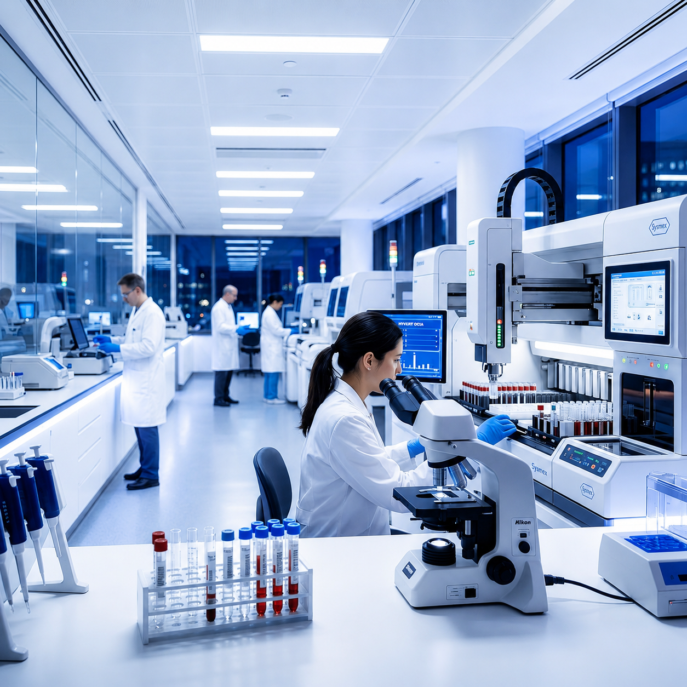
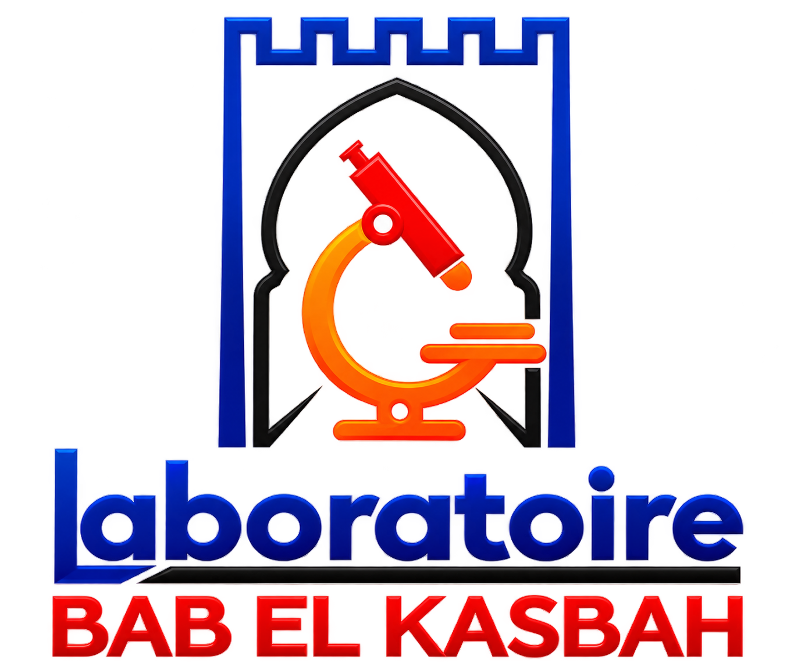
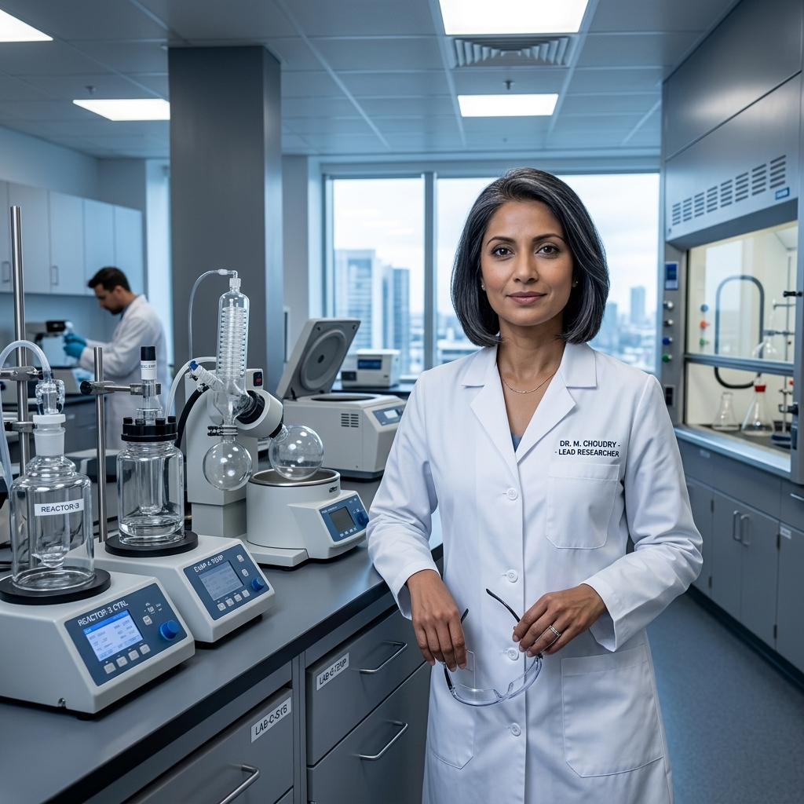
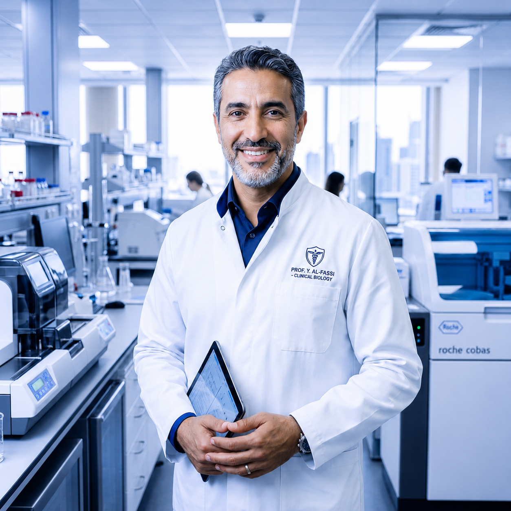
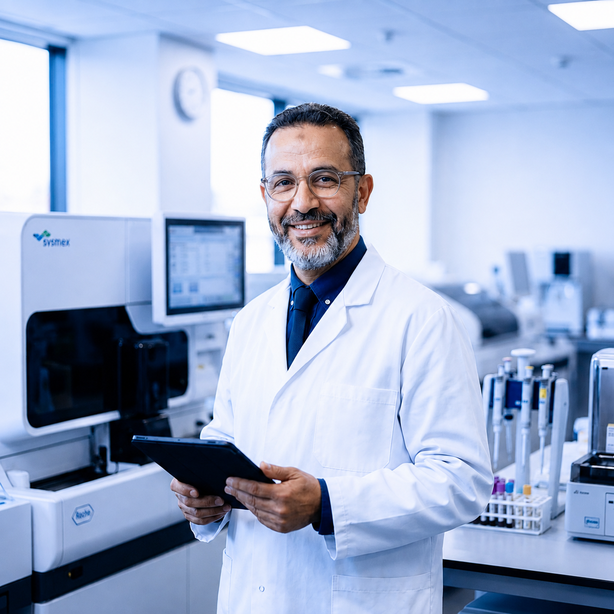
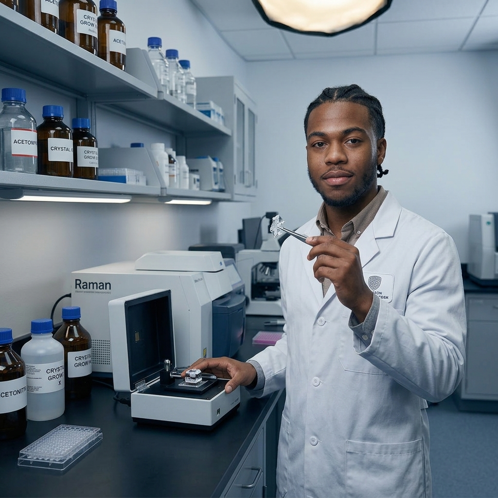
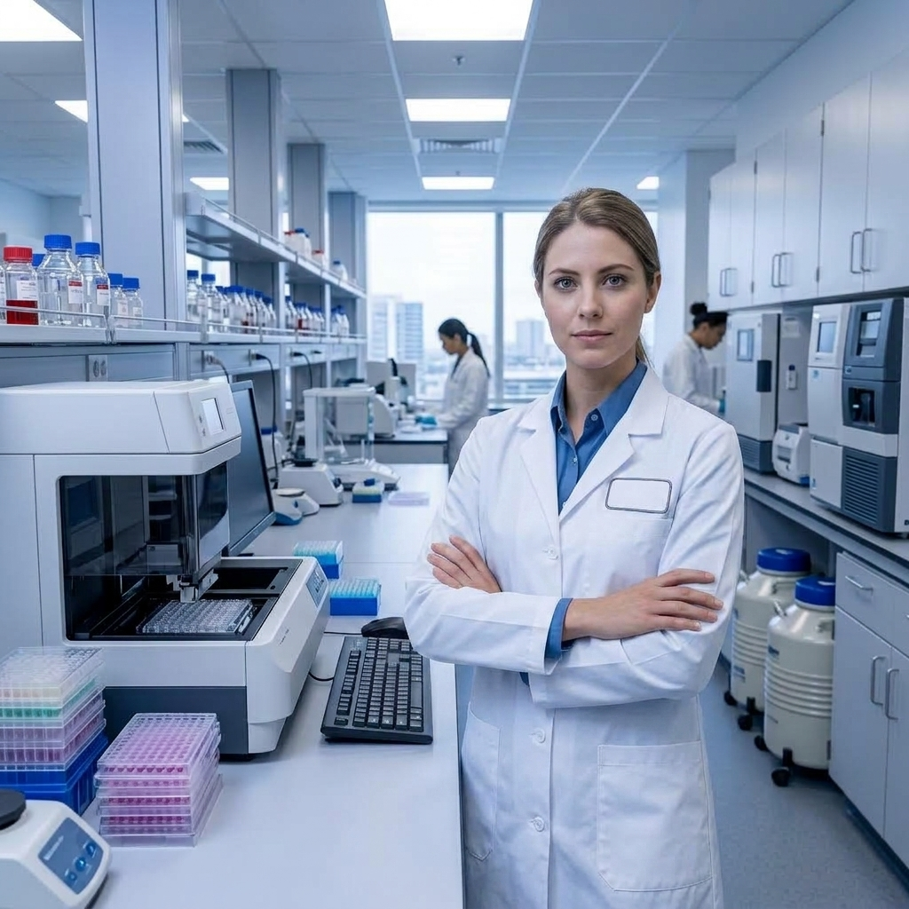

Automatisation · Traçabilité · Qualité

Laboratoire d'analyses médicales sous la direction du Dr. CHELLAOUI Said. Plateau technique moderne, résultats rapides en ligne et accueil sans rendez-vous.
Consultation et téléchargement en ligne.
Accueil direct du lundi au samedi.
AMO, CNSS, CNOPS & tiers payant.
Nous voulons rendre la biologie médicale plus claire, plus humaine et plus fluide. Derrière chaque résultat, il y a une personne, un besoin et une décision importante.

Des informations structurées, des parcours sans friction et des services conçus autour des usages réels des patients.
Automatisation et expertise clinique travaillent ensemble pour sécuriser chaque étape du parcours analytique.
Recherchez par nom, domaine ou besoin. L'interface est pensée pour aller droit à l'essentiel.
Globules, plaquettes et paramètres hématologiques.
↗Dosage du glucose sanguin.
↗Cholestérol total, HDL, LDL, triglycérides.
↗Exploration de la fonction thyroïdienne.
↗Évaluation des réserves en fer.
↗Marqueur biologique de l'inflammation.
↗Dosage de la 25-OH vitamine D.
↗Recherche et identification de germes.
↗Sous la direction du Dr. CHELLAOUI Said, notre équipe pluridisciplinaire conjugue rigueur clinique, technologie de pointe et accompagnement personnalisé.





Des parcours simples, des résultats clairs, un accompagnement humain.
« Prise en charge rapide et sans attente, équipe très professionnelle, et mes résultats étaient disponibles dès le lendemain matin en ligne. »
« Un accueil chaleureux et des explications claires sur mon bilan. On sent une vraie rigueur derrière chaque résultat. »
« Des comptes rendus structurés et rapides : un vrai confort pour le suivi de mes patients. Je recommande sans réserve. »
Une question spécifique ? Notre équipe vous répond au 08 08 504 833 ou au 06 23 960 756.
Cela dépend de l'analyse. Un jeûne de 8 à 12 h est recommandé pour la glycémie et le bilan lipidique. Pour la plupart des autres examens, ce n'est pas nécessaire. Les consignes précises vous sont rappelées lors de la réservation.
La majorité des analyses de routine est rendue sous 24 h. Certains dosages spécialisés peuvent nécessiter 48 à 72 h. Vous êtes notifié dès la validation biologique par SMS et e-mail.
La grande majorité des analyses de routine s'effectue sans rendez-vous, du lundi au samedi dès 07:00. Vous pouvez également nous contacter si vous préférez planifier votre venue.
Un lien sécurisé vous est envoyé par SMS et e-mail après votre prélèvement. Vous pouvez consulter vos comptes rendus, suivre vos examens en cours et télécharger vos résultats au format PDF.
Oui. Nous travaillons avec l'AMO, la CNSS, la CNOPS et la plupart des mutuelles partenaires. Une facture détaillée et un dossier de remboursement vous sont remis à chaque visite.
Pour un rendez-vous, une question sur vos résultats ou des informations sur nos analyses, notre équipe est là.
Idéalement situé sur l'Avenue Moulay Rachid, directement en face de l'Hôpital Mokhtar Soussi.